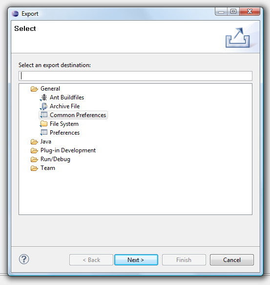
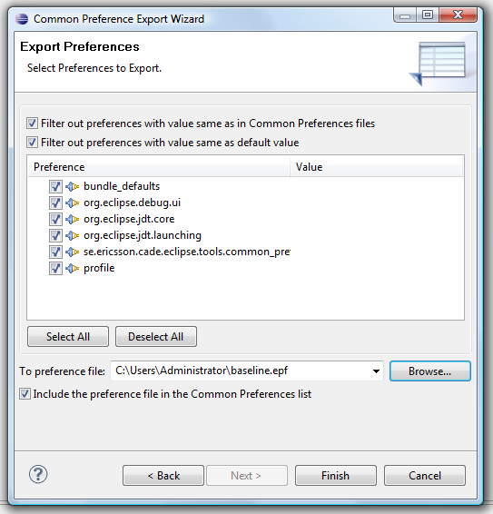

Exporting Preferences
The Preferences to Export are listed in the Export
Preferences dialog of the Common Preference Export Wizard.
The dialog is accessible via the Export
wizard by clicking File > Export..., expanding
General and selecting Common Preferences.


The preferences are grouped based on the respective plug-in they
belong to. This makes it a little difficult to understand exactly what
preference setting you want to export, especially if you have done many
changes to your preferences. Hence, it is good practice to either
start Eclipse with a new workspace or create a "preference
baseline" before changing any of the default preferences you want
to export.
To export preferences:
- Create a preference baseline using the Export
Preferences dialog as illustrated above. Select all preferences and
save them to a file (e.g. baseline.epf) by clicking Finish.
Note that this step is optional, but recommended for the reason mentioned
earlier. Make sure that the Include the preference file in the Common Preferences list
check-box is selected. This will enable you to filter out these
settings in the next step.
- Set the preference values you want to export using the
Preferences
dialog (click Window > Preferences). After
you are done making changes to the preference values, click OK.
- Export the changes you made to a preference file using the
Export Preferences dialog as illustrated above. Note that each
individual value is not selectable. This is because a plug-in might
generally need to keep its saved values consistent. Select one or
multiple values, and save to a file (e.g. changed_prefs.epf) by
clicking Finish.
- Store the preference file in an appropriate location.
If you are planning to use the properties file on your machine, you can
place it anywhere on the disk. However, if you are planning to share
the file, it obviously needs to be in a location accessible to all
clients. Both URLs (i.e. http://changed_prefs.epf) and UNC paths (i.e.
\\ComputerName\SharedFolder\changed_prefs.epf) are supported as locations.